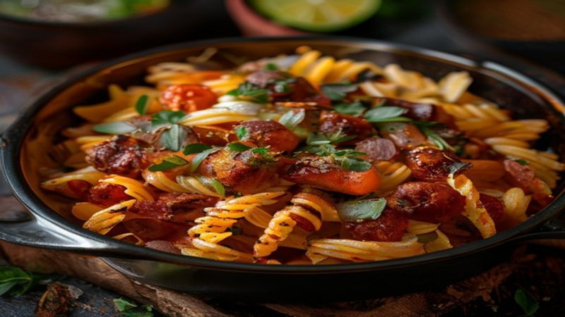

One-Pot Taco Pasta
One-Pot Taco Pasta combines all your favorite taco flavors into a cheesy, creamy pasta dish! Ready in 25 minutes with just one pot to clean. A family favorite weeknight dinner.
Ingredients
- 1 lb ground beef (or turkey)
- 1 small onion, diced
- 2 cloves garlic, minced
- 1 packet taco seasoning (or 2 tbsp homemade)
- 1 can (14 oz) diced tomatoes
- 2 cups beef broth
- 8 oz rotini pasta
- 1 cup shredded Mexican blend cheese
- 1/4 cup sour cream
- Fresh cilantro, diced avocado, jalapeños for topping
Instructions
What happens when tacos meet pasta? Pure magic! This One-Pot Taco Pasta is cheesy, flavorful, and done in 25 minutes with barely any cleanup. Your whole family will go crazy for this one.
Brown the ground beef in a large pot or Dutch oven over medium-high heat, breaking it into crumbles. Drain excess fat if needed.
Add the diced onion and garlic to the beef. Cook for 2-3 minutes until the onion is softened and translucent.
Stir in the taco seasoning, diced tomatoes (with their juices), and beef broth. Bring the mixture to a boil.
Add the rotini pasta, stir well, and reduce heat to medium. Cover and simmer for 12-14 minutes, stirring occasionally, until the pasta is cooked and most of the liquid is absorbed.
Remove from heat and stir in the shredded cheese and sour cream until everything is melted and creamy. The sauce should be thick and coat every piece of pasta.
Serve topped with fresh cilantro, diced avocado, sliced jalapeños, and extra cheese if desired. Hot sauce on the side is a must!
One pot, 25 minutes, and the whole family is happy — that's the beauty of taco pasta! This is comfort food at its finest and it reheats beautifully for leftovers. You'll want to add this to your weekly rotation!
Recommended Kitchen Essentials
Every great recipe starts with great tools. Here are our top picks to make cooking easier and more enjoyable:
Support Quick Bites Kitchen — When you purchase through our links, we may earn a small commission at no extra cost to you. This helps us keep creating free recipes for everyone. Thank you!